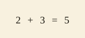
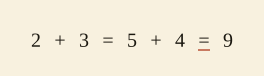
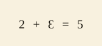

Glyph-level filmstrips from strategies/render/notation_scene.pl and strategies/render/parametric_notation_deformation.pl via more-zeeman/render/drawer.js (the notation format). Notation denotes the symbol string a child wrote, not the quantity it was meant to mean. Each deformation is born only as a labeled misconception (one flagged glyph or one appended mark). The diff between a correct inscription and its deformation is one field.
Demos 1 and 3 host on the real lesson IM-GK-U1-L12 (grade_k.pl:18). The IM K/Grade-1 corpus carries no number-writing lesson, so a numeral-reversal deformation attaches to a counting/addition lesson as host. The honesty card under each demo states where it is corpus-attested and where it is literature-only.
Honesty card: Productive inscription on the real lesson IM-GK-U1-L12 (grade_k.pl:18). No marks, no flips: a child correctly writes 2 + 3 = 5. Notation is a real productive language; only its deformations live in the misconception lane.
NOTATION-productive-2plus3-IM-GK-U1-L12

Honesty card: Equals read as makes: the child chains the running total, writing 2+3=5+4=9 with a chain-equals tick under each = whose two sides denote unequal quantities. Violation family corpus-attested (513 multi-= docling transcriptions); K/G1 instance literature-only.
NOTATION-operational-equals-chain-2plus3plus4

Honesty card: A reversed digit in a small sum; the reversed digit is chosen in Prolog from the lesson's number range, not in JS. Literature-only; no number-writing lesson exists in the IM K/G1 corpus, so it is hosted on an addition lesson; parametric over reversal-prone digits, not a corpus instance count.
NOTATION-mirror-written-numeral-IM-GK-U1-L12
